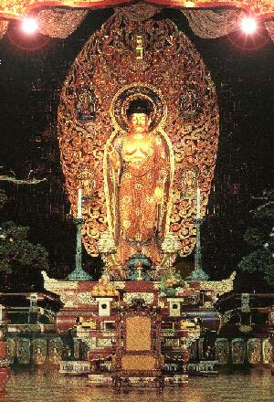

|  | A igreja Risho Kossei-Kai do Brasil esta aberta ao público diariamente das 8:30 às 17:00 horas. Para as pessoas interessadas na RKK, vejam os dias cerimoniais constatadas na programação e venham nos visitar para conhecer os ensinamentos do Buda Shakyamuni, que tem como objetivo a união de todas as religiões visando a paz mundial. Rua Dr. Jose Estefno, 40 - V.Mariana São Paulo - SP Cep 04116-060 Tel.5549-4446 e 5573-8377 Fax.5549-4304 email: risho@rkk.org.br |